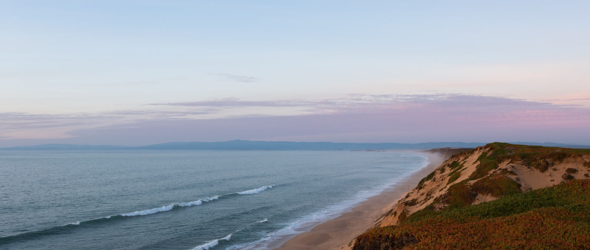

Your go-to place to savor The Every Day. come on in for your morning latte, brunch with your crew, lunch with the boss, breakfast (for dinner) with the family, or good conversation and cocktails at the bar. We invite you to our table with a smile, ready to serve up our modern take on delicious American food and drink. Here you will find fast friends in our servers, bartenders, and fellow diners. We are a family, and we want you to feel at home, whether itis your first visit, or your fiftieth. Our dining spaces are open and social, creating a versatile neighborhood place for you—and your taste buds—to play.